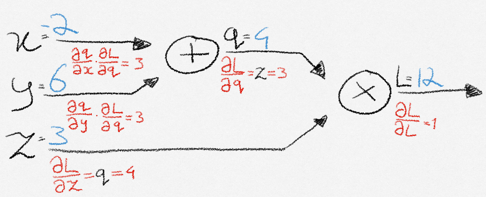
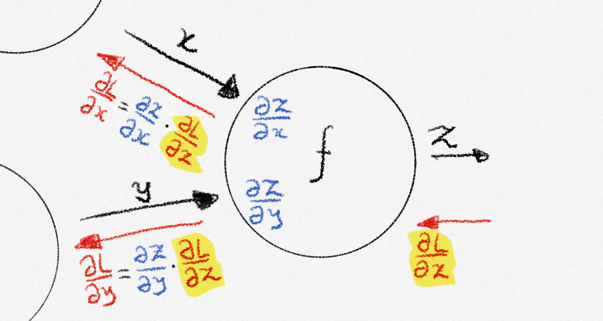

Why backpropagation?
A neural network consists of initially random weights and biases. Training the network boils down to minimizing a loss function that quantifies how wrong the network’s output is compared to the desired output. Gradient descent is the algorithm used for finding weights and biases that minimize the loss. The way these parameters are updated is determined by taking a step in the direction of the negative gradient of the loss function, which can be thought of as following an arrow that points towards where the loss function decreases the quickest. The problem is: how do we calculate this gradient?
A first idea might be to grab a piece of paper and derive the gradient by hand. This is very tedious, requiring lots of matrix calculus and paper, and is infeasible for complex models. Additionally, this solution is not modular, since when you want to change something about the network or loss, you need to recalculate the gradient from scratch. We would like to implement an automatic way of calculating the gradient. Let’s look at some ways we could do this, excluding backpropagation for now.
- Numerical method: Adjust each parameter by a little and see how the loss changes in response. This method lacks precision and does not scale to large neural networks, where it would lead to lots of repeated computations, making it very slow.
- Symbolic method: The thought behind this method is that once an expression for the gradient is found, evaluating it can be fast. This method uses calculus rules to derive an exact expression for the gradient, but is even slower than the numerical method due to large, repeated expressions, making it infeasible to use in practice.
This is where backpropagation steps in. It brings exact precision while at the same time being extremely quick, making it the standard for updating parameters in neural networks.
The computational graph
Let’s see backpropagation in action through a simple example. Let’s say that we want to minimize the made-up loss function:
\[ L(x, y, z) = (x + y)z \]
The way a computer evaluates that function is by constructing a computational graph, consisting of several nodes and edges. It calculates the result by calculating the value at each node and passing it forward to the next node, until it reaches the end of the computation.
Backpropagation uses this graph, storing intermediate computations that it will later need along the way. This is called the forward pass.

Let’s name the nodes as follows:
\[ \begin{align} q &= x + y \\ L &= zq \end{align} \]
We see that the derivatives are
\[ \frac{\partial L}{\partial z} = q, \frac{\partial L}{\partial q} = z, \frac{\partial q}{\partial x} = 1, \frac{\partial q}{\partial y} = 1. \]
These represent the effect that \(z\) and \(q\) have on \(L\), and the effect that \(x\) and \(y\) have on \(q\). However, we are not done yet! Remember that our goal was not to find these derivatives, but to find \(\frac{\partial L}{\partial x}, \frac{\partial L}{\partial y}\text{ } \text{and } \frac{\partial L}{\partial z}\): the effect that \(x\), \(y\), and \(z\) have on the loss \(L\) at the end of the graph.
Calculating derivatives
Looking at the graph, we see that when the input to \(q\) changes by \(\partial x\), its output changes by \(\frac{\partial q}{\partial x}\) as a result. How much \(L\) changes in response to a change in \(q\) is given by \(\frac{\partial L}{\partial q}\). So the effect that a change in \(x\) has on \(L\), is given by chaining these effects together: \(\frac{\partial L}{\partial x} = \frac{\partial L}{\partial q}\frac{\partial q}{\partial x}\).
Following the same reasoning, we see that \(\frac{\partial L}{\partial y} = \frac{\partial L}{\partial q}\frac{\partial q}{\partial y}\).
Since \(z\) directly affects \(L\) without intermediate nodes, the change in \(L\) from a change in \(z\) is simply given by \(\frac{\partial L}{\partial z}\)
We compute these values by moving from the end of the graph back to the beginning, this is called the backward pass.
During the forward pass, every node received input from its upstream nodes, performed a basic computation, and then passed the result forward to its downstream nodes. When the final node in the graph computes its output, the computation is done. At that point the backward pass will start.
Note: A downstream node is one that comes after the flow of data (i.e., closer to the output), and an upstream node is one that comes before (i.e., closer to the input). In the backward pass, since data flows from output to input, the terms are used in reverse.
Propagating backward
Let’s zoom in on a random node during the backward pass.

Eventually, this node will receive a number from its output node, called the upstream gradient. This represents the change in the loss function all the way at the end of the graph when the output of this particular node changes. If the node receives multiple upstream gradients, it sums them up. After receiving the upstream gradient, the node computes local gradients, which represent how much each output of the node is affected by each input to the node. The node then calculates how each of its inputs affects the loss by multiplying each local gradient by the upstream gradient, and passes these downstream gradients to the respective input nodes. These input nodes then receive it as their own upstream gradient, repeating the process.
This entire process is a repeated application of the chain rule, which lets us compute how an input affects the final output through intermediate variables. When the process reaches the beginning of the graph, each input received an upstream gradient, meaning that we have the gradient of the loss function with respect to the inputs, and we are able to perform an iteration of gradient descent.
To summarize, a node:
- Receives an upstream gradient
- Passes along downstream gradients by multiplying the upstream gradient with local gradients.
The only thing left to do is to calculate these local gradients.
We do this by defining the local gradient for all node types we have in our graph beforehand.
In the case of an addition node, the local gradients are \(1\), so the downstream gradients are just the upstream gradient. For multiplication nodes, the local gradient with respect to an input node \(a\) is simply the product of all other input nodes. In a two-input case, this means that the gradient with respect to \(a\) is simply the other input. Other node types have simple gradient calculations as well!
Looking back
Thinking about calculating the gradient in terms of this computational graph has melted away all our initial problems. Remember that calculating the gradient by hand is tedious or infeasible, but using backpropagation it has become trivial! Secondly, we no longer need to recalculate the gradient when we change the structure of the model. This is because the building blocks of the graph remain the same, so whilst the graph could have a different structure, the backpropagation algorithm remains the same, so our modularity issue is solved! Finally, backpropagation does not need to repeat calculations, making it extremely fast, and suitable for training deep neural networks.
Thank you for reading! I recommend that you check out Justin Johnson’s excellent video, which goes in-depth on generalizing to vector and tensor valued functions, and which this post was based upon.